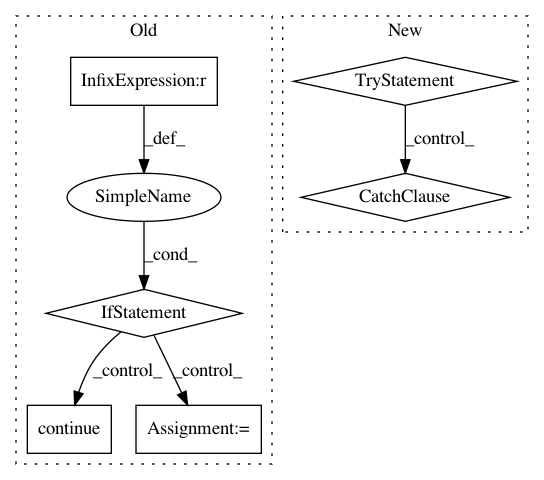

5ee0e817393363bdbdce356f6ab971b04e0ea387,src/python/pants/java/nailgun_protocol.py,NailgunProtocol,iter_chunks,#Any#Any#Any#Any#,254
Before Change
orig_timeout_time = None
timeout_interval = None
while 1:
if orig_timeout_time is not None:
remaining_time = time.time() - (orig_timeout_time + timeout_interval)
if remaining_time > 0:
original_timestamp = datetime.datetime.fromtimestamp(orig_timeout_time).isoformat()
raise cls.ProcessStreamTimeout(
"iterating over bytes from nailgun timed out with timeout interval {} starting at {}, "
"overtime seconds: {}"
.format(timeout_interval, original_timestamp, remaining_time))
elif timeout_object is not None:
opts = timeout_object.maybe_timeout_options()
if opts:
orig_timeout_time = opts.start_time
timeout_interval = opts.interval
continue
remaining_time = None
else:
remaining_time = None
with cls._set_socket_timeout(sock, timeout=remaining_time):
chunk_type, payload = cls.read_chunk(sock, return_bytes)
yield chunk_type, payload
if chunk_type == ChunkType.EXIT:
After Change
// We poll with low timeouts because we poll under a lock. This allows the DaemonPantsRunner
// to shut down the socket, and us to notice, pretty quickly.
with cls._set_socket_timeout(maybe_shutdown_socket.socket, timeout=0.01):
try:
chunk_type, payload = cls.read_chunk(maybe_shutdown_socket.socket, return_bytes)
except socket.timeout:
// Timeouts are handled by the surrounding loop
continue
yield chunk_type, payload
if chunk_type == ChunkType.EXIT:
break
In pattern: SUPERPATTERN
Frequency: 4
Non-data size: 6
Instances
Project Name: pantsbuild/pants
Commit Name: 5ee0e817393363bdbdce356f6ab971b04e0ea387
Time: 2019-05-03
Author: ity@twitter.com
File Name: src/python/pants/java/nailgun_protocol.py
Class Name: NailgunProtocol
Method Name: iter_chunks
Project Name: home-assistant/home-assistant
Commit Name: 6354399d55688a77359c78b3d9914d001208af7e
Time: 2016-04-28
Author: paulus@paulusschoutsen.nl
File Name: homeassistant/components/automation/__init__.py
Class Name:
Method Name: _process_if
Project Name: Coder-Yu/RecQ
Commit Name: 8e958d70fa54c0b249f7e6de27fd57cbaa7563d4
Time: 2016-11-13
Author: fqq0429@gmail.com
File Name: algorithm/rating/SlopeOne.py
Class Name: SlopeOne
Method Name: predict
Project Name: regel/loudml
Commit Name: e57e91a650fe62f1033da5aa66ff114a67cf69e9
Time: 2018-05-18
Author: vianney@redmintnetwork.fr
File Name: loudml/loudml/storage.py
Class Name: Storage
Method Name: load_model_hooks